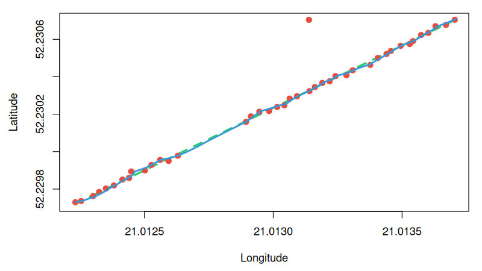

An advanced 2D Kalman Filter and linear interpolation toolkit for GPS trajectory smoothing and analysis, implemented in R with a high-performance C backend via the .Call interface.
The package is specifically designed to handle raw GPS data , offering dual-layer protection against telemetry anomalies: an R-level distance-velocity gate for severe outlier rejection and a native C Kalman core for optimal noise reduction.
Installation
You can install the development version of gpscleaner using one of the two methods below:
Method 1: Directly from R (Recommended)
You can install the package directly from GitHub using the devtools package. Run the following command inside your R console:
```R # If you don’t have devtools installed yet: # install.packages(“devtools”)
devtools::install_github(“nomysz05/projekt-pakiety”)
Method 2: From the Terminal via Git Clone
If you prefer to download the source code manually, clone the GitHub repository, navigate into the main directory, and install it using the native R compiler toolchain:
```bash # Clone the repository git clone https://github.com/nomysz05/projekt-pakiety.git
1. Clean noisy GPS data
clean_data <- noise_cleaner( time = c(0, 1, 2, 3), lat = c(52.2, 52.2001, 52.2002, 52.2003), lon = c(21.0, 21.0001, 21.0002, 21.0003), speed = c(13.0, 13.0, 13.0, 13.0), sigma_a = 0.8, sigma_gps = 1.0 )
2. Interpolate missing data points
interp_data <- interpolate_gps( time = c(0, 1, 2, 3, 4), lat = c(52.2, NA, NA, 52.2003, 52.2004), lon = c(21.0, NA, NA, 21.0003, 21.0004), speed = c(13.0, 13.0, 13.0, 13.0, 13.0) )
Visual Performance Verification
The example below demonstrates the package’s capability to process distorted trajectory data using a straight-line movement test case:
- Green Dashed Line: The true, ideal linear trajectory.
-
Red Dots: Raw simulated GPS data containing standard measurement noise, a multi-second signal dropout (
NAgap), and a severe positional outlier jump (multipath simulation). -
Blue Line: The final output computed by
gpscleaner.
The package successfully reconstructs the missing data points via time-based linear interpolation and deploys the C-implemented 2D Kalman filter to reject the massive outlier jump completely, keeping the path physically continuous and smooth.

API Parameters Reference
The package provides two main functions: gps_noise_cleaner (for dual-layer filtering) and interpolate_gps (for data gap reconstruction). Below is the detailed specification of all parameters used across the toolkit.
Detailed Parameter Matrix
| Parameter | Type | Default Value | Units / Range | Target Function(s) | Description |
|---|---|---|---|---|---|
time |
numeric vector |
Required | Seconds (s) |
Both | Monotonically increasing sequence of timestamps. |
lat |
numeric vector |
Required | Degrees [] or Semicircles | Both | Latitude coordinates. Supports automatic Garmin semicircle detection. Can contain NA for interpolation. |
lon |
numeric vector |
Required | Degrees [] or Semicircles | Both | Longitude coordinates. Supports automatic Garmin semicircle detection. Can contain NA for interpolation. |
speed |
numeric vector |
Required | Meters per second (m/s) |
Both | Instantaneous speed profile. Can contain NA values for interpolate_gps, which will be automatically reconstructed. |
sigma_a |
numeric |
0.8 |
gps_noise_cleaner |
Process Noise: Controls expected acceleration changes. Higher values allow the filter to adapt faster to rapid shifts. | |
sigma_gps |
numeric |
1.0 |
Meters (m) |
gps_noise_cleaner |
Measurement Noise: Represents expected GPS positional error. Higher values make the filter trust the physical model more than the raw signal. |